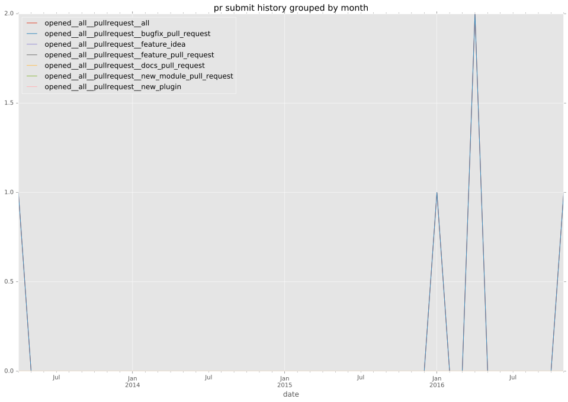

authors
- nand0p
maintainers
- mjschultz
contributors
- mjschultz : 23 commits
- nand0p : 13 commits
- bcoca : 1 commits
- abadger : 1 commits
total issue counts
unknown: 1
feature pull request: 3
pullrequest: 12
bugfix pull request: 7
feature idea: 2
issue: 7
new plugin: 1
bug report: 5
issue history
pullrequest history

days open by issue type
bugfix pull request
count: 11
std: 38.8407003026
min: 4
max: 106
median: 20.0
mean: 33.0
all
count: 24
std: 55.1393327353
min: 0
max: 225
median: 17.0
mean: 41.4583333333
pullrequest
count: 0
std: nan
min: nan
max: nan
median: nan
mean: nan
feature pull request
count: 5
std: 36.2794707789
min: 13
max: 96
median: 17.0
mean: 31.2
feature idea
count: 1
std: nan
min: 51
max: 51
median: 51.0
mean: 51.0
issue
count: 0
std: nan
min: nan
max: nan
median: nan
mean: nan
new plugin
count: 2
std: 0.0
min: 3
max: 3
median: 3.0
mean: 3.0
bug report
count: 4
std: 96.0572745814
min: 0
max: 225
median: 96.5
mean: 104.5
closures grouped by total days open